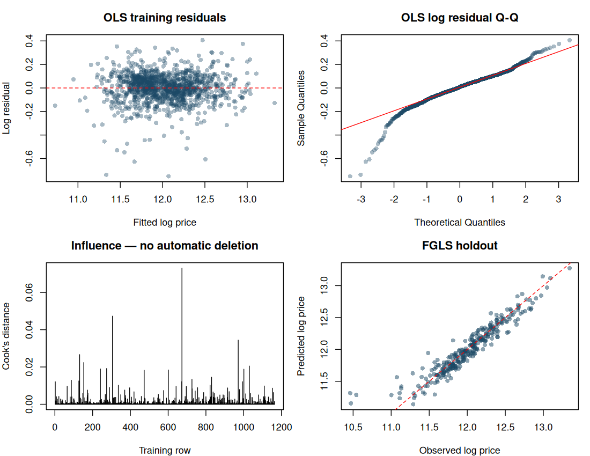
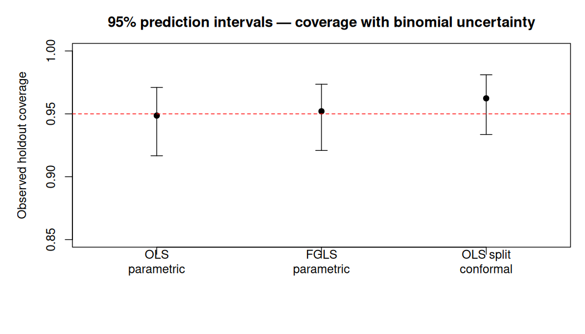

Yader Alexander Ramírez Bonilla · reproducible base-R analysis
This is a new internal reassessment, not the historical HTML or an external validation. The original data and research history remain unchanged. No Kaggle score or Nicaragua transfer is claimed.
Raw-data random split: 1168 training / 292 holdout, seed 123. Ten training folds, seed 42. Each fit learns its own imputation, categories, scaling and independent columns. OLS and FGLS share the exact matrix. Area filtering is applied only to fitting rows; assessment houses remain included.
| policy | model | rmse_log | rmse_usd | mae_usd | r2_predictive | squared_correlation |
|---|---|---|---|---|---|---|
| all_properties | FGLS | 0.14602 | 33567.86 | 18347.57 | 0.76167 | 0.81396 |
| training_area_lt4000 | FGLS | 0.14371 | 33873.72 | 17883.17 | 0.70294 | 0.81152 |
| all_properties | OLS | 0.14534 | 33737.46 | 18263.03 | 0.75218 | 0.81256 |
| training_area_lt4000 | OLS | 0.14374 | 33981.01 | 17894.92 | 0.69983 | 0.81076 |
Selection uses minimum mean CV RMSE in log price. Tiny score gaps do not prove superiority. Selected: FGLS / training_area_lt4000.
| policy | model | n | rmse_log | rmse_usd | mae_usd | r2_predictive | squared_correlation |
|---|---|---|---|---|---|---|---|
| training_area_lt4000 | OLS | 292 | 0.13840 | 21900.53 | 15777.88 | 0.92431 | 0.92617 |
| training_area_lt4000 | FGLS | 292 | 0.13854 | 21878.40 | 15782.70 | 0.92447 | 0.92635 |
Predictive R² is 1 − SSE/SST; squared correlation is reported separately. Exponentiation is a median-type price prediction. Historical preprocessing and feature exploration limit claims of a pristine test.

A funnel on dollar residuals does not by itself establish heteroscedastic log errors. Cook diagnostics do not automatically delete houses. Non-normality alone does not imply coefficient bias.
| method | n | coverage | coverage_ci_lower | coverage_ci_upper | mean_width_usd | median_width_usd |
|---|---|---|---|---|---|---|
| OLS parametric | 292 | 0.94863 | 0.91669 | 0.97097 | 90123.04 | 80307.50 |
| FGLS parametric | 292 | 0.95205 | 0.92086 | 0.97354 | 88282.03 | 80589.33 |
| OLS split conformal | 292 | 0.96233 | 0.93360 | 0.98105 | 104301.31 | 95568.48 |

OLS uses the usual future-error plus coefficient-uncertainty terms. FGLS predicts variance weights for new houses and passes these to predict.lm; plug-in inference remains approximate. Split conformal uses a separate, prespecified OLS/all-properties fit on 876 proper-training houses and 292 calibration houses. It uses the exact sorted calibration score at ceiling((m+1)×0.95), without interpolation or refitting. Its coverage statement is marginal under exchangeability, not conditional for every house. Different fit sizes affect width.
The corrected OLS/FGLS comparison does not establish a substantial weighting benefit. Observed coverage must be considered with its uncertainty and width; it is not a calibration guarantee. Original XGBoost and blend scripts contain overlapping training/evaluation data, so they are archived rather than assigned revised scores.
Rscript run_analysis.R
Exports include split and fold IDs, CV metrics, holdout predictions, prediction intervals, model features, runtime details and submission_revised.csv. The submission has not been sent to Kaggle.